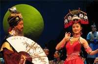
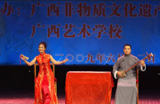
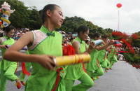

桂林悠久的文化历史孕育了多姿多彩的人文遗址和文化艺术。作为古典艺术的桂剧，曾在桂林有着深厚广泛的群众基础。它也是体现桂林文化特质、展现桂林人精神风貌的一种传统艺术，它的形成发展过程，在一定程度上体现了桂林社会思想文化、民风民俗的形成演变过程，具有重要的历史学、社会学及文化学研究价值。同时，桂剧沉淀了中国戏曲和桂林文化许多历史层面的艺术创造，它也对其他地方艺术如彩调、文场等的发展产生过一定的影响。
| 彩调 | 文场 | 桂林渔鼓 | 零零落 |
|  |  |  | |
|
彩调是我们桂林百姓喜闻乐见的传统艺术形式，被誉为"充满泥土芬芳的快乐剧种",和桂剧同为桂林两大地方戏曲，一俗一雅，目前也已入选国家级非物质文化遗产名录。桂林的彩调戏班出现于晚清，其中最早的是同治年间廖四姑等组成的仙家班。这些赌场往往以唱戏、唱调子招徕赌客，彩调因此进入城市。为了保证能再赌场连日持续演出，部分艺人学习，移植了一批桂剧剧目。由此彩调与桂剧在剧目、表演、唱腔等方面相互渗透，并出现了既演桂剧又演彩调的"鸳鸯班"。 |
文场戏是在桂林曲艺文场清唱（坐唱）基础上发展起来的。由于长期与桂北民歌、小调和方言紧密结合、融汇，成为桂北地区一种清唱类型的地方性曲艺表演形式。清末桂林耍家曾继藩、章幻圃、胡宏保、陈竹畴不满足于文场的坐唱或走唱形式，以文场剧目、声腔、曲牌为基础，仿效桂剧角色、行当，在施家园登台演出《翠莲对经》、《二姑娘算命》、《崔氏逼休》三戏，在社会上引起了强烈的反响，此为文场戏之始。时人称这种演出为"文场挂衣"、"文场踩台"或"文场古剧"。 |
桂林渔鼓。是广西代表性民间说唱艺术形式之一。由道情演变而来。受湖南渔鼓影响颇深。形成具有浓郁地方特色的说唱艺术是在本世纪50年代初，以艺人王仁和自编自唱的现代曲目《王老头子学文化》为代表作。桂林渔鼓用桂林方言演唱，它是以四句为一组的单曲体、征调式，双句结构，双句押韵，一韵到底。唱时四句一组，往反重复，直至结束。唱词均是七字句，句数为双句。该曲种的长处是擅于叙述人物与故事情节，长篇、中篇和短篇都可演唱。 |
零零落是以桂林方言为演唱基础，流行于桂北一带的曲艺形式。它具有一人多角、轻便灵活、反映现实快等特点，深为群众所喜闻乐见。零零落是由莲花落演变而来，莲花落用"哩哩莲花，哩哩莲花落"来唱和，而零零落则用"零零落，长板落"来唱和，并因此而得名。零零落源于宋、元时代贫苦人歌唱的乞食词莲花落。相传清乾隆年间桂林设有4所专门收容流民和流浪艺人的养济院，院中收容的人由于官府所发钱米不足以维持最低生活。 |